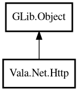

Http
Object Hierarchy:

Description:
public class Http : Object
Static utility methods for HTTP requests.
Provides both shortcut one-liner methods and a request builder for more complex scenarios. Uses GIO SocketClient with raw HTTP/1.1
protocol internally. No external HTTP library required.
Example:
// Simple GET
var resp = Http.get ("http://localhost:8080/hello");
// POST with body
var resp = Http.post ("http://localhost:8080/data", "hello");
// Builder pattern
var resp = Http.request ("PUT", "http://localhost:8080/item")
.bearerToken ("my-token")
.body ("update data")
.send ();
Content:
Static methods:
- public static HttpResponse? @delete (string url)
Sends an HTTP DELETE request.
- public static HttpResponse? @get (string url)
Sends an HTTP GET request.
- public static bool download (string url, Path dest)
Downloads a file from a URL and saves it to disk.
- public static uint8[]? getBytes (string url)
Sends a GET request and returns the response body as bytes.
- public static string? getText (string url)
Sends a GET request and returns the response body as text.
- public static HttpResponse? head (string url)
Sends an HTTP HEAD request.
- public static HttpResponse? patchJson (string url, string jsonBody)
Sends an HTTP PATCH request with a JSON body.
- public static HttpResponse? post (string url, string body)
Sends an HTTP POST request with a text body.
- public static HttpResponse? postForm (string url, HashMap<string,string> fields)
Sends an HTTP POST request with form-encoded body.
- public static HttpResponse? postJson (string url, string jsonBody)
Sends an HTTP POST request with a JSON body.
- public static HttpResponse? putJson (string url, string jsonBody)
Sends an HTTP PUT request with a JSON body.
- public static HttpRequestBuilder request (string method, string url)
Creates a request builder for custom HTTP requests.
Creation methods:
Inherited Members:
All known members inherited from class GLib.Object
- @get
- @new
- @ref
- @set
- add_toggle_ref
- add_weak_pointer
- bind_property
- connect
- constructed
- disconnect
- dispose
- dup_data
- dup_qdata
- force_floating
- freeze_notify
- get_class
- get_data
- get_property
- get_qdata
- get_type
- getv
- interface_find_property
- interface_install_property
- interface_list_properties
- is_floating
- new_valist
- new_with_properties
- newv
- notify
- notify_property
- ref_count
- ref_sink
- remove_toggle_ref
- remove_weak_pointer
- replace_data
- replace_qdata
- set_data
- set_data_full
- set_property
- set_qdata
- set_qdata_full
- set_valist
- setv
- steal_data
- steal_qdata
- thaw_notify
- unref
- watch_closure
- weak_ref
- weak_unref